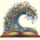
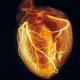

Accurate structure prediction of biomolecular interactions with AlphaFold 3
Simulating 500 million years of evolution with a language model
Genome modeling and design across all domains of life with Evo 2
Towards Accurate and Efficient Binding Affinity Prediction
Decoding the molecular interactions of life
A Foundation Model for the Earth System
Towards Specialized Foundation Models in Astronomy
A Large Language Model for Science
A Pretrained Language Model for Scientific Text
Developing ChemDFM as a large language foundation model for chemistry
Multimodal Natural and Chemical Languages Foundation Model
Diffusion Language Models Are Versatile Protein Learners

GenomeOcean
Efficient 4B genome foundation model trained on 600 Gbp of metagenomic assemblies for de novo sequence generation.

scGPT
toward building a foundation model for single-cell multi-omics using generative AI
Nothing matches those filters.